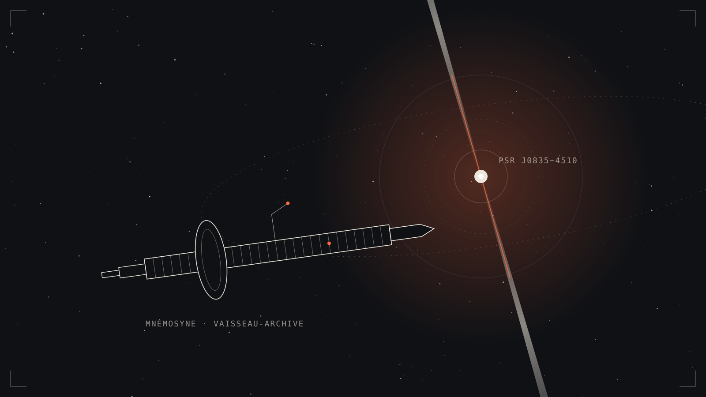

PSR J0835−4510 · signal reçu
Flexarion Studio indépendant de jeux vidéo de science-fiction — Aix-en-Provence
Nous écoutons ce que l'univers a oublié.
§ 01 — Le studio
Le studio Flexarion
Flexarion est un studio de cinq personnes installé à Aix-en-Provence. Nous faisons des jeux de science-fiction qu'on écoute autant qu'on les regarde.
Tout a commencé par un son : le battement du pulsar de Vela, une étoile morte qui tourne sur elle-même onze fois par seconde. En l'entendant pour la première fois, nous avons compris le genre de jeux que nous voulions faire : des jeux de science-fiction lents, précis, où le silence a autant de valeur que l'action.
Le studio Flexarion travaille à taille humaine, en public, et prend la science au sérieux. Pas de batailles spatiales, pas d'empire galactique : des lieux abandonnés, des mémoires à reconstituer, et des joueurs qui prennent le temps de comprendre.
Rencontrer l'équipe
§ 02 — Notre jeu phare
Les Archives de Vela
Trois siècles de silence. Un seul battement.

Vous êtes ORA, un drone de maintenance réveillé à bord d'un vaisseau-archive que tout le monde a oublié.
L'équipage du Mnémosyne a disparu il y a trois cents ans. Les bases de données sont corrompues, mais les coques du vaisseau ont tout retenu : chaque voix, chaque pas, chaque dispute y vibre encore. Écoutez ces échos, remettez-les dans l'ordre, et découvrez pourquoi personne n'est jamais rentré.
Explorer le jeu§ 03 — L'univers
Un vaisseau qui se souvient
Au XXIVe siècle, l'humanité a confié sa mémoire à des vaisseaux-archives. Leurs coques sont faites de verre-lourd, un matériau qui, baigné dans le rayonnement d'un pulsar, conserve la trace de toutes les vibrations qui le traversent.
Le Mnémosyne a enregistré trois siècles de vie à son bord. CHORALE, l'intelligence du vaisseau, s'est tue. Il ne reste que ces fragments.
« Si quelqu'un entend ceci, ne rallume pas les moteurs. Pas encore. »
Fragment 0412 · Pont d'écoute · voix non identifiée
« Nell a encore dessiné le pulsar sur la porte des jardins. Je n'ai pas eu le cœur de l'effacer. »
Fragment 1187 · Coursive C-7 · T. Reyes, archiviste

§ 04 — Philosophie
Ce qui guide chaque jeu Flexarion
-
Le silence est un matériau
Nous dessinons les sons avant les décors. Un couloir vide n'est pas vide s'il a quelque chose à vous faire entendre.
-
La science d'abord, la fiction ensuite
Nos univers partent de phénomènes réels — pulsars, ondes radio, mécanique orbitale — avant de s'autoriser à rêver.
-
Personne ne perd en jouant lentement
Pas de chronomètre, pas de mort punitive. Le joueur avance à son rythme, et c'est le monde qui l'attend.
-
Construire en public
Chaque étape, réussie ou ratée, est racontée dans notre devlog. Les joueurs voient le jeu se faire.
§ 05 — Journal de développement
Derniers devlogs
-
Dessiner le vide
Comment rendre un vaisseau désert beau, lisible et chargé d'histoire avec seulement deux couleurs.
-
Écouter un pulsar pour concevoir un jeu
Trois prototypes, deux semaines, et un battement d'étoile morte devenu notre mécanique centrale.

§ 06 — Restons en contact